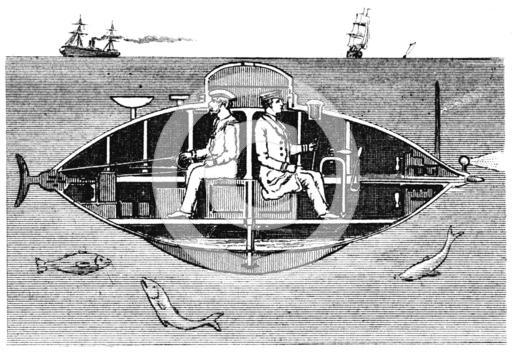

U-Boot (en inglés y en otros idiomas U-boat), abreviatura del alemán Unterseeboot, «nave submarina», en plural U-Boote, es la denominación dada a los sumergibles y submarinos alemanes desde la Primera Guerra Mundial. El principal escenario donde actuaron fue el océano Atlántico y el mar del Norte y rara vez el océano Índico u océano Pacífico. Mientras que el término alemán se refiere a cualquier submarino, el inglés (en común con varios otros idiomas) se refiere específicamente a los submarinos militares operados por Alemania, particularmente en la Primera y la Segunda Guerra Mundial. Aunque a veces eran armas navales eficientes contra buques de superficie enemigos, se utilizaron con mayor eficacia en una función de guerra económica (similar a incursiones "piratas" o "corsarios") y en la aplicación de un bloqueo naval contra otro país. Los objetivos principales de las campañas de submarinos en ambas guerras fueron los convoyes mercantes que traían suministros desde Canadá y otras partes del Imperio Británico, y desde los Estados Unidos al Reino Unido y (durante la Segunda Guerra Mundial) a la Unión Soviética y los territorios aliados en el Mediterráneo. Los submarinos alemanes también destruyeron los buques mercantes brasileños durante la Segunda Guerra Mundial, lo que provocó que Brasil declarara la guerra a Alemania e Italia el 22 de agosto de 1942.
|  |
|
|
|
|
| > | > | > |